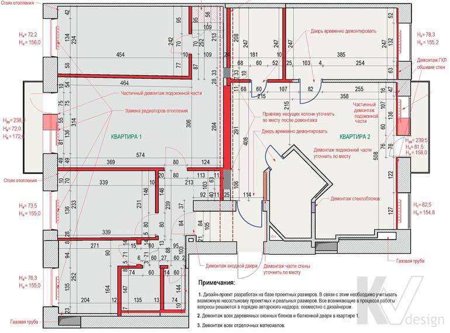

План демонтажа стен и перегородок

На такому плані вказуються під знесення ділянки стін, висота стель і створюваних нових прорізів, а також виконується прив'язка розмірів до зовнішніх стін приміщення. Крім того, на цьому ж кресленні при необхідності відзначається заміна віконних, вхідних і внутрішніх дверних блоків, батарей опалення, а для вторинного житла вказується видалення всіх старих оздоблювальних матеріалів. Завдяки плану демонтажу будівельники отримують повне уявлення про майбутній фронті робіт і кількості сміття, яке згодом буде потрібно вивезти з об'єкта.